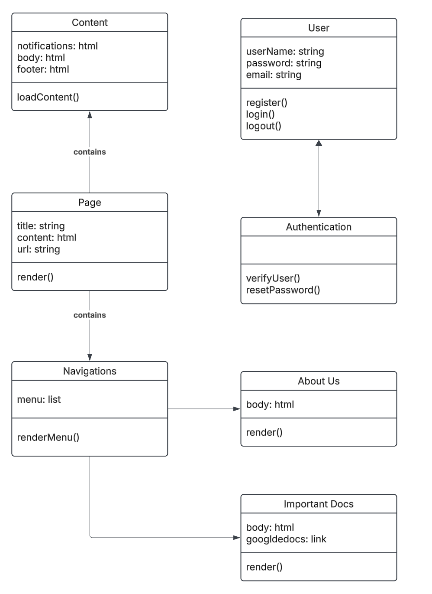

Group _4_ Product Website
Active Website
Product Info
Creating an Intranet Website for HRDC.
Website is designed for staff use to help find important docs, keep logs, and track info.
User Documentation
1. Our Staff Intranet provides a space for important documents and information to be easily found and used by HRDC staff.
2. No software is required, only internet access.
3. Enter the URL " " into the search bar of your browser for access.
4. To use the software, users will have to enter their credentials to login. Admin permissions will allow users to create and delete entries and alter functionalities. Non-admin permissions will allow users to view the website and utilize its functions.
5. To report a bug, a screenshot and brief description of the bug can be sent via email to tylerfoster512@gmail.com.
Developer Documentation
How to Obtain Source Code:
Visit https://423s25.github.io/project5/
Download the repository
Planned Directory Structure:
Documentation
Developer Doc
User Doc
UML
UML documents
Site
Design
Images
Styles
Frameworks
Code
NextJS
HTML
Misc. Code
How to Build:
Install NextJS
Visit this documentation: https://nextjs.org/docs/app/getting-started/installation
Instal Flask
Visit this documentation: https://flask.palletsprojects.com/en/stable/installation/
Gain access as to the GitHub as a contributor
Speak to your superiors to be added
Download Source code and begin
How to Test:
DO NOT push to Github before testing
After saving your changes, access the website __ via flask
Test your feature against other areas they may affect
Have team members review your changes
Push afterwards
Automated Build and Test:
How to Release a Version:
Consult your PM
After consulting, speak with your clients about the changes
Learn what they are satisfied/dissatisfied with
Update documentation to reflect changes
Push new version to Github
(Optionally) Create blog release overviewing new features
Bug Tracker
Good comments are a Necessary
UML Class Diagram
